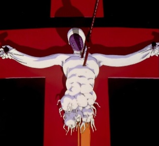

Ángeles
Los Ángeles son una raza de seres alienígenas que aparecen en la serie Neon Genesis Evangelion. Son los principales antagonistas de la serie, y su objetivo es destruir la humanidad. Los Ángeles son seres misteriosos y poderosos, con habilidades sobrenaturales y formas de vida únicas. A lo largo de la serie, los personajes principales deben enfrentarse a los Ángeles y luchar por la supervivencia de la humanidad. Hay varios tipos de Ángeles, cada uno con habilidades y poderes únicos. Algunos de los más conocidos incluyen:
- Sachiel: El tercer ángel, conocido por su capacidad de regeneración y su poderoso rayo de energía.
- Shamshel: El cuarto ángel, que utiliza látigos de energía para atacar.
- Ramiel: El quinto ángel, que tiene una forma geométrica y puede disparar un rayo de partículas de alta energía.
- Gaghiel: El sexto ángel, que se asemeja a una criatura marina gigante.
- Israfel: El séptimo ángel, que puede dividirse en dos entidades separadas.
- Sandalphon: El octavo ángel, que se encuentra en estado embrionario dentro de un volcán.
- Matarael: El noveno ángel, que tiene la capacidad de segregar un ácido corrosivo.
- Zeruel: El décimo ángel, conocido por su fuerza bruta y su capacidad de lanzar explosiones de energía.
- Arael: El undécimo ángel, que tiene la capacidad de leer la mente de sus oponentes.
- Armisael: El duodécimo ángel, que tiene la capacidad de fusionarse con otros seres vivos.
- Tabris: El decimotercer ángel, que se infiltra en NERV en forma humana como Kaworu.